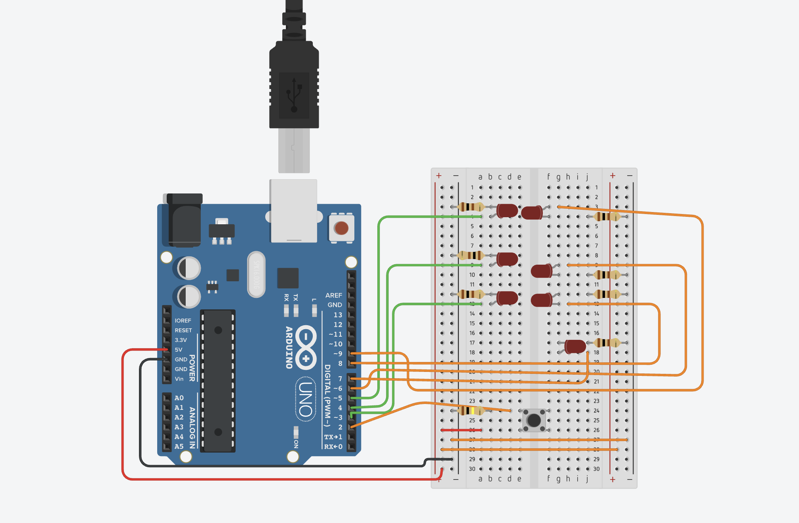

Guía de trabajo
Proyecto: Dado Electrónico
Primero completa tus respuestas en esta hoja. Cuando termines, usa el botón para abrir la versión de impresión y guardar un PDF con tus propias respuestas.
Propósito
- Construir y programar un dado electrónico.
- Usar un botón para “lanzar” el dado.
- Encender LEDs según el número que salga.
- Generar un número aleatorio del 1 al 6.
- Hacer que funcione como un dado real, pero electrónico.
¿Qué vamos a aprender?
- Qué es una entrada (botón).
- Qué es una salida (LED).
- Cómo encender y apagar LEDs.
- Qué es un número aleatorio.
- Cómo usar condiciones (
if) en programación. - Cómo hacer que un proyecto funcione como un juego real.
Material
- 1 Arduino UNO
- 7 LEDs
- 7 resistencias 220Ω
- 1 botón
- 1 resistencia 10kΩ (si no se usa
INPUT_PULLUP) - Protoboard
- Cables
Imagen de referencia

Desarrollo del proyecto
Paso 1. Conexión
- Conectar los 7 LEDs a los pines digitales 2 al 8.
- Conectar el botón al pin 9.
- Revisar que todas las tierras (GND) estén conectadas correctamente.
Paso 2. Programación
El programa debe:
- Esperar a que el botón esté presionado.
- Encender todos los LEDs por medio segundo.
- Apagar todos los LEDs.
- Generar un número del 1 al 6.
- Encender los LEDs que representen ese número.
Paso 3. Prueba
- Presiona el botón.
- Observa cómo “rueda” el dado.
- Verifica que el número cambie cada vez.
Evaluación
- Conexión correcta.
- Código funcional.
- Que el botón funcione bien.
- Que el número cambie.
- Trabajo en equipo.
- Presentación del proyecto.
Instrucción para ingresar a Tinkercad
- Abre tu navegador de internet (Chrome, Edge o Firefox).
- Ingresa a la siguiente dirección:
https://www.tinkercad.com. - Haz clic en Iniciar sesión (Sign in).
- Selecciona una de estas opciones para entrar: Cuenta de Google, Cuenta de Microsoft o Cuenta de Autodesk.
- Una vez dentro de la plataforma, entra a la sección Circuits (Circuitos).
- Presiona el botón Create new Circuit (Crear nuevo circuito).
- Dentro del simulador podrás agregar un Arduino Uno, insertar LEDs, colocar resistencias, conectar buzzer, añadir un botón y escribir el código del programa.
- Finalmente presiona Start Simulation para ejecutar el circuito y verificar que funcione correctamente.
Indicaciones importantes:
- Guarda tu proyecto con el nombre:
DadoElectronico_Arduino_TuNombre. - Verifica que el número cambie cada vez.
- Comprueba que el circuito no tenga errores de conexión.
Código de la práctica
//Pin to to turn dice on & off
int button = 2;
//LED for DICE
int bottomLeft = 3;
int middleLeft = 4;
int upperLeft = 5;
int middle = 6;
int bottomRight = 7;
int middleRight = 8;
int upperRight = 9;
int state = 0;
long randNumber;
//Initial setup
void setup(){
pinMode(bottomLeft, OUTPUT);
pinMode(middleLeft, OUTPUT);
pinMode(upperLeft, OUTPUT);
pinMode(middle, OUTPUT);
pinMode(bottomRight, OUTPUT);
pinMode(middleRight, OUTPUT);
pinMode(upperRight, OUTPUT);
pinMode(button, INPUT);
Serial.begin(9600);
randomSeed(analogRead(0));
}
void loop(){
//Read our button if high then run dice
if (digitalRead(button) == HIGH && state == 0){
state = 1;
randNumber = random(1, 7);
delay(100);
Serial.println(randNumber);
if (randNumber == 6){
six();
}
if (randNumber == 5){
five();
}
if (randNumber == 4){
four();
}
if (randNumber == 3){
three();
}
if (randNumber == 2){
two();
}
if (randNumber == 1){
one();
}
delay(5000);
clearAll();
state = 0;
}
}
//Create a function for each of our "sides" of the die
void six()
{
digitalWrite(bottomLeft, HIGH);
digitalWrite(middleLeft, HIGH);
digitalWrite(upperLeft, HIGH);
digitalWrite(bottomRight, HIGH);
digitalWrite(middleRight, HIGH);
digitalWrite(upperRight, HIGH);
}
void five()
{
digitalWrite(upperLeft, HIGH);
digitalWrite(bottomLeft, HIGH);
digitalWrite(middle, HIGH);
digitalWrite(upperRight, HIGH);
digitalWrite(bottomRight, HIGH);
}
void four()
{
digitalWrite(upperLeft, HIGH);
digitalWrite(bottomLeft, HIGH);
digitalWrite(upperRight, HIGH);
digitalWrite(bottomRight, HIGH);
}
void three()
{
digitalWrite(upperLeft, HIGH);
digitalWrite(middle, HIGH);
digitalWrite(bottomRight, HIGH);
}
void two()
{
digitalWrite(bottomRight, HIGH);
digitalWrite(upperLeft, HIGH);
}
void one(){
digitalWrite(middle, HIGH);
}
void clearAll(){
digitalWrite(bottomLeft, LOW);
digitalWrite(middleLeft, LOW);
digitalWrite(upperLeft, LOW);
digitalWrite(middle,LOW);
digitalWrite(bottomRight, LOW);
digitalWrite(middleRight, LOW);
digitalWrite(upperRight, LOW);
}Practicario
Parte 1. Comprensión
Parte 2. Análisis del código
Parte 3. Reflexión
Reto extra (Opcional)
- Agregar un buzzer.
- Hacer que el dado “ruede” más rápido.
- Agregar luces que parpadeen antes de mostrar el número.
Firma de revisión
Profesor: ____________________________________